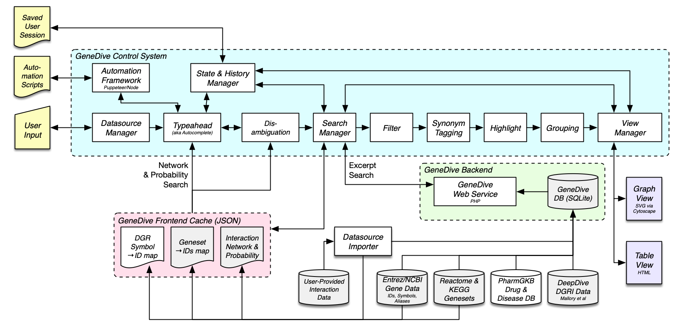

GeneDive is a powerful but easy-to-use application that can search, sort, group, filter, highlight, and visualize interactions between drugs, genes, and diseases (DGR). GeneDive also facilitates topology discovery through the various search modes that reveal direct and indirect interactions between DGR. The search results, in textual and graphical form, can be downloaded along with the search settings to easily restart the session at later time. Refer to Previde et al., 2018 for more details.
GeneDive is a joint project between the Computer Science Department at San Francisco State University, and the Bioengineering Department at Stanford University
To cite this work, please use the following publication:
Previde P., Thomas B., Wong M., Mallory E., Petkovic D., Altman R., and Kulkarni A. (2018) GeneDive: A Gene Interaction Search and Visualization Tool to Facilitate Precision Medicine. In the Proceedings of Pacific Symposium on Biocomputing, Vol 23, pp. 590-601. January 2018.
GeneDive is built using a modular architecture, with modules grouped into three subsystems: control, backend, and cache. The front-end control subsystem is the largest subsystem and is written in PHP and Javascript and relies heavily on the Bootstrap and CytoScape frameworks. The backend subsystem is written using interpreted langauges Python and Perl, especially the Mojolicious framework. The cache subsystem is populated by the datasource importer module and managed by PHP scripts which intelligently combines requested datasources to provide a fast and responsive UI. Each module is responsible for a set of conceptually related features provided by GeneDive.
Mike Wong mikewong@sfsu.edu
{kind=link}